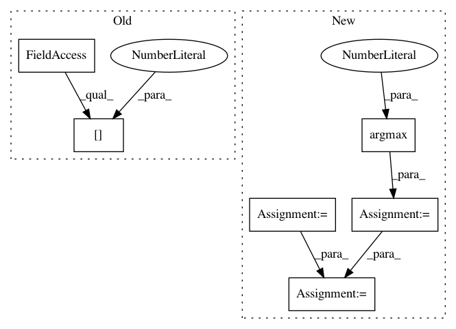

516c2a4c7e8f92e1ea299e966215c2ffe4c5b980,cifar10.py,,,#,14
Before Change
callbacks=[ModelCheckpoint("weights/DenseNet-40-12-CIFAR10.h5", monitor="val_acc", save_best_only=True,
save_weights_only=True)],
validation_data=test_generator.flow(testX, testY, batch_size=batch_size),
nb_val_samples=testX.shape[0], verbose=1)
scores = model.evaluate_generator(test_generator.flow(testX, testY, nb_epoch), testX.shape[0])
print("Accuracy = %f" % (100 * scores[1]))
After Change
// nb_val_samples=testX.shape[0], verbose=2)
yPreds = model.predict(testX)
yPred = np.argmax(yPreds, axis=1)
yTrue = testY
accuracy = metrics.accuracy_score(yTrue, yPred) * 100
error = 100 - accuracy
print("Accuracy : ", accuracy)
print("Error : ", error)
In pattern: SUPERPATTERN
Frequency: 3
Non-data size: 6
Instances
Project Name: titu1994/DenseNet
Commit Name: 516c2a4c7e8f92e1ea299e966215c2ffe4c5b980
Time: 2016-12-07
Author: titu1994@gmail.com
File Name: cifar10.py
Class Name:
Method Name:
Project Name: IBM/adversarial-robustness-toolbox
Commit Name: 72e8efe6c1acc40f0b4a672a4330813e1a4066e5
Time: 2020-07-24
Author: beat.buesser@ie.ibm.com
File Name: art/attacks/evasion/auto_attack.py
Class Name: AutoAttack
Method Name: _run_attack
Project Name: rusty1s/pytorch_geometric
Commit Name: db28ee240981457335c6fd9c38e542066df214cb
Time: 2020-02-19
Author: matthias.fey@tu-dortmund.de
File Name: examples/cluster_gcn.py
Class Name:
Method Name: test